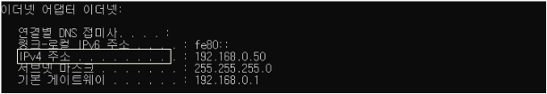
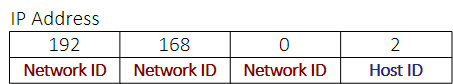
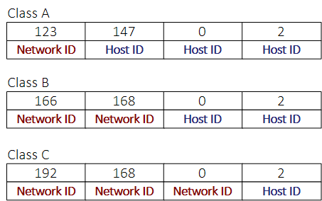
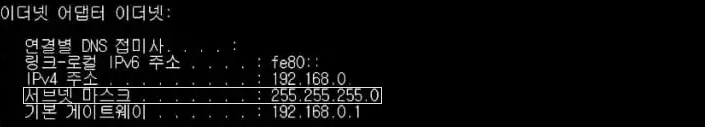

*개인적인 공부 내용을 기록하는 용도로 작성한 글 이기에 잘못된 내용을 포함하고 있을 수 있습니다.
명령 프롬프트(command prompt)창을 실행해 ipconfig 명령어를 입력하면 아래와 같은 내용을 출력한다.
(명령 프롬프트창은 "윈도우 + R" 혹은 검색에서 "cmd"를 입력해 실행한다.) 이번 포스팅 에서는 ipconfig 명령어를 실행시 나오는 IPv4 주소에 대해 정리해 보고자 한다.
#1 IPv4 주소
#2 IP 클래스
#3 서브넷 마스크
#1 IPv4 주소

우리가 흔히 부르는 IP주소는 IPv4주소를 의미한다. IP주소의 범위는 0.0.0.0번 부터 255.255.255.255번까지이며 .(dot)으로 구분된 옥텟(8bit/1byte) 4개가 조합되어 총 32비트로 이루어진 체계이다.
IP(Internet Protocol)주소란 인터넷 공간에서 자기 PC를 구별하기 위한 고유한 식별자를 의미한다. 자신의 PC에서 사용하는 IP주소는 데이터를 송신하는 주체이므로 출발지 IP 주소라고 간주한다.

하나의 IP주소는 Network ID와 Host ID로 이루어진다. 이는 전화번호 체계를 떠올리면 이해하기 쉬운데, Network ID는 국번 Host ID는 일련번호에 해당하는 개념이다. IP주소의 Network ID와 Host ID는 IP의 Class 개념을 이용해 구분할 수 있다.
#2 IP 클래스
IP주소는 A, B, C, D, E 다섯가지 클래스로 나누어 Network ID와 Host ID로 구분할 수 있다.
A클래스의 경우 처음 8bit가 Network ID이고 나머지 24bit가 Host ID이다.
B클래스의 경우 처음 16bit가 Network ID이고 나머지 16bit가 Host ID이다.
C클래스의 경우 처음 24bit가 Network ID이고 나머지 8bit가 Host ID로 사용된다.
D클래스는 멀티캐스트 용도로 E클래스는 미래에 사용하기 위해 남겨둔 클래스로 실제로 사용되는 케이스는 드물다.

클래스의 구분은 IP 주소의 첫 옥텟(8bit)의 범위에 따라 나뉘어 진다.
각 첫 옥텟의 범위는 A클래스 1 ~ 126 , B클래스 128 ~ 191 , C클래스 192 ~ 223 이다.
* 이 때 127번으로 시작하는 IP주소는 어디에도 속하지 않으며 127.0.0.1로 사용되는 특별한 주소로 자기가 사용하는 LAN카드를 의미해 루프백 주소(Loopback address)라고 불린다.
#3 서브넷 마스크
서브넷마스크에 대해 이해하기 위해선 서브네팅(Subnetting)에 대한 개념을 알고 있어야 한다.
서브네팅은 기본 IPv4 주소고갈 문제를 해결하기 위해 등장한 기법이다. (IPv4는 32bit로 구성되어 대략 43억개의 IP만을 할당할 수 있다.)
서브네팅이란 네트워크의 성능을 향상시키기 위해서 IP를 네트워크 영역과 호스트 영역으로 분할하여 자원을 효율적으로 분배하는 과정으로 하나의 네트워크를 여러개의 네트워크 ip로 분할하는 작업을 말한다.

이러한 서브네팅을 수행하기 위해선 서브넷 마스크(Subnet Mask)가 필요하다. 서브넷 마스크는 IP주소와 쌍으로 사용하는 개념으로 Network ID와 호스트 ID를 구분해주는 구분자 역할을 해주며 필요 없는 IP 주소를 가려주는 역할을 수행한다.
예를들어 IP주소가 192.168.0.1 서브넷 마스크가 255.255.255.0 으로 주어졌다면 네트워크 ID는 192.168.0 호스트 ID는 1이다. 만약 IP주소가 168.126.63.1 서브넷 마스크가 255.255.0.0으로 주어지면 네트워크 ID는 168.126 호스트 ID는 63.1 이다.